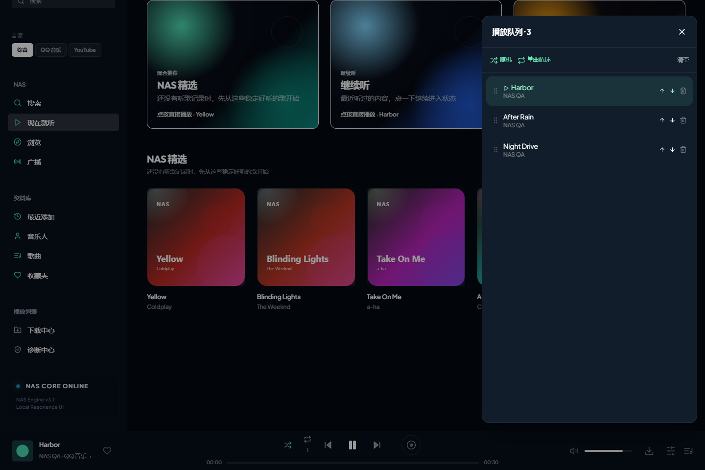

01 / LISTENING ROOM
音乐在这里，
其他的，慢慢来。
从找歌到排好下一首，
留一个顺手、安静的桌面空间。

02 / MADE FOR EVERYDAY
歌在不同地方，
一起搜就好。
综合搜索 QQ、YouTube，先找到的先出现。同一版本的歌曲整合音源，也保留现场、翻唱和混音各自的样子。
综合搜索 / 手动选源 / 下一首预加载同一首歌，
也有不同的心情。
想听更有力的低频，或是靠近一点的人声？九种实时音效，点选即切换。想回到音乐本来的样子，随时选择原声。
在桌面上，
自然地陪着你。
双击就打开独立窗口。托盘、迷你播放器和全局快捷键，让音乐不用抢走你的注意力。收藏、歌词、下载，也都在熟悉的位置。
Ctrl + Alt + Space播放 / 暂停Windows 版
正在读取版本信息…适合日常使用 · 创建桌面和开始菜单快捷方式
下载便携版 ZIP解压后运行需要 Microsoft Edge WebView2。安装版会在缺少时联网补齐；便携版请先安装运行时。
查看文件校验值 SHA-256
安装版
打包后提供便携版
打包后提供RELEASE NOTES
这次，新在哪里。
v1.7.0 · 2026.10
01 音频先准备，封面随后更新，预加载实际的下一首。
02 综合搜索与同版本曲目整合，提供音源选择。
03 九种实时音效与原声选项，平滑切换。
04 完整播放队列、随机与循环，恢复上次播放进度。
05 桌面重复打开唤醒原窗口，附带播放运行组件。
历史版本A FEW THINGS TO KNOW
开始之前。
几个你可能关心的问题。
安装之后，怎么打开？
从桌面快捷方式或开始菜单打开 NAS音乐器，就是独立的软件窗口，无需浏览器和命令行。便携版请先完整解压，再双击 NASMusicBox.exe。
会装到 C 盘吗？需要多少空间？
新安装会优先选择 D/E 固定硬盘，也可以在向导里自行修改。建议预留至少 1.5 GB 安装与解压空间，下载的歌曲另计。收藏、设置等用户资料默认保存在系统用户目录；WebView2 为共享系统运行时。
Windows 提示“未知发布者”怎么办？
目前安装包尚未做代码签名，首次运行可能出现 Windows 提示。请核对下载来源，并用本页提供的 SHA-256 校验值确认文件；不确定来源时请勿运行。
为什么有些在线歌曲仍然要等？
预加载能减少准备下一首的等待，但首次解析、平台曲目权限和网络状况仍会影响播放；部分音源可能不可用。可以尝试切换同一首歌的其他来源，或播放本地文件。软件不承诺所有平台曲目都能播放。
九种音效是汽水音乐原版吗？
这些音效由 NAS 独立实现与调音，不是汽水音乐的原版算法或预设。清澈人声是均衡处理，不是人声分离；360 环绕和 3D 音效通过立体声处理营造空间感。
更新会丢失收藏和队列吗？
程序和用户资料分开保存，更新不覆盖收藏和历史。队列与进度会保存，重启后保持暂停；再次播放时会重新准备音源。重要资料仍建议定期备份。
遇到问题，去哪里反馈？
请在 GitHub Issues 描述 Windows 版本、软件版本和复现步骤。启动日志位于用户资料目录 data/logs，提交前请检查是否包含个人路径或曲目信息。